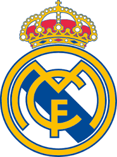

1. Era Awal & Sematan Nama "Real" (1902–1940-an)1902: Klub resmi berdiri di bawah presiden pertama, Juan Padrós.1905: Meraih trofi mayor pertama mereka, yaitu Copa del Rey.1920: Raja Alfonso XIII menganugerahi gelar "Real" (artinya Royal / Kerajaan) kepada klub, sehingga namanya berubah menjadi Real Madrid beserta tambahan mahkota pada logonya.1932: Real Madrid memenangkan gelar La Liga pertama mereka sepanjang sejarah.2. Era Santiago Bernabéu & Generasi Emas Pertama (1943–1970-an)1943: Mantan pemain klub, Santiago Bernabéu Yeste, terpilih menjadi presiden. Ia memodernisasi klub, membangun stadion baru (Stadion Santiago Bernabéu) pada tahun 1947, dan merintis akademi pemain muda.1956–1960: Bernabéu mendatangkan pemain bintang dunia seperti Alfredo Di Stéfano, Ferenc Puskás, dan Francisco Gento. Hasilnya, Real Madrid mencetak sejarah yang belum terpatahkan dengan memenangkan 5 trofi Piala Champions berturut-turut (sekarang Liga Champions) sejak edisi pertama digulirkan.3. Era La Quinta del Buitre (1980-an)Setelah sempat meredup di kancah Eropa pasca-meninggalnya Bernabéu, Real Madrid kembali mendominasi Spanyol berkat generasi emas lokal yang dipimpin oleh Emilio Butragueño (dijuluki La Quinta del Buitre).Generasi ini membawa Madrid menjuarai La Liga 5 kali berturut-turut (1986–1990) dan memenangkan 2 Piala UEFA.4. Era Galácticos & Florentino Pérez (2000–2006)1998: Dipimpin bintang muda Raúl González, Madrid mengakhiri puasa gelar Eropa selama 32 tahun dengan menjuarai Liga Champions ke-7.2000: Florentino Pérez terpilih menjadi presiden dan memulai proyek Galácticos (Pemain Bintang Lima). Ia mendatangkan megabintang dunia setiap tahunnya: Luís Figo, Zinedine Zidane, Ronaldo Nazário, dan David Beckham. Meski sukses secara finansial dan popularitas global, era ini dinilai kurang seimbang di atas lapangan.5. Era Cristiano Ronaldo & La Décima (2009–2018)2009: Pérez kembali menjadi presiden dan memecahkan rekor transfer dunia untuk mendatangkan Cristiano Ronaldo.2014: Di bawah asuhan pelatih Carlo Ancelotti, Madrid memenangkan La Décima (gelar Liga Champions ke-10) setelah menanti selama 12 tahun.2016–2018: Dipimpin oleh pelatih Zinedine Zidane, Real Madrid melakukan hal luar biasa di era sepak bola modern dengan menjuarai Liga Champions 3 kali berturut-turut sebelum akhirnya Ronaldo hengkang sebagai top skor sepanjang masa klub.6. Era Modern & Regenerasi (2019–Sekarang)Pasca-kepergian Ronaldo, Madrid berfokus memadukan pemain veteran (seperti Luka Modrić dan Toni Kroos) dengan talenta muda berbakat (seperti Vinícius Júnior, Rodrygo, dan Jude Bellingham).2022 & 2024: Carlo Ancelotti kembali dan mempersembahkan gelar Liga Champions ke-14 (2022) serta mempertegas dominasi dengan gelar ke-15 pada tahun 2024 di Stadion Wembley.Saat ini, Real Madrid terus mempertahankan statusnya sebagai raksasa sepak bola dunia dengan lini serang menakutkan yang dihuni oleh Kylian Mbappé bersama Vinícius Júnior.
PRESTASI UTAMA
Prestasi Internasional & EropaLiga Champions UEFA (Piala Champions): 15 kali (Rekor Terbanyak) — 1956, 1957, 1958, 1959, 1960, 1966, 1998, 2000, 2002, 2014, 2016, 2017, 2018, 2022, 2024Piala Dunia Antarklub FIFA: 5 kali (Rekor Terbanyak) — 2014, 2016, 2017, 2018, 2022Piala Interkontinental (FIFA Intercontinental Cup): 5 kali (Termasuk edisi baru) — 1960, 1998, 2002, 2024Piala Super UEFA: 6 kali (Rekor Terbanyak) — 2002, 2014, 2016, 2017, 2022, 2024Liga Eropa UEFA (Piala UEFA): 2 kali — 1985, 1986Piala Latin: 2 kali — 1955, 1957Piala Ibero-Americana: 1 kali — 1994🇪🇸 Prestasi Domestik (Spanyol)La Liga (Liga Spanyol): 36 kali (Rekor Terbanyak) — Terakhir menjuarai musim 2023/2024Copa del Rey (Piala Raja): 20 kali — Terakhir menjuarai tahun 2023Supercopa de España (Piala Super Spanyol): 13 kali — Terakhir menjuarai tahun 2024Copa de la Liga (Piala Liga Spanyol): 1 kali — 1985Copa Eva Duarte (Pendahulu Piala Super Spanyol): 1 kali — 1947🏅 Penghargaan Khusus dari FIFAKlub Terbaik Abad ke-20: Dianugerahi langsung oleh FIFA pada 11 Desember 2000 karena dominasi mutlak mereka di kancah sepak bola dunia sepanjang abad yang lalu.
🏆 Statistik & Catatan JuaraTotal Gelar Juara: 36 kali.Total Menjadi Runner-up: 26 kali.Gelar Pertama: Musim 1931–1932.Gelar Terakhir: Musim 2023–2024 (Dipastikan juara saat kompetisi masih menyisakan 4 pertandingan).Klub Anti-Degradasi: Real Madrid adalah satu dari tiga klub yang tidak pernah turun kasta ke divisi dua sejak La Liga pertama kali dibentuk pada 1929 (bersama Barcelona dan Athletic Bilbao).📅 Daftar Musim Juara La LigaReal Madrid memenangkan trofi La Liga pada musim-musim berikut:1931–32, 1932–33, 1953–54, 1954–55, 1956–57, 1957–58, 1960–61, 1961–62, 1962–63, 1963–64, 1964–65, 1966–67, 1967–68, 1968–69, 1971–72, 1975–76, 1977–78, 1978–79, 1979–80, 1985–86, 1986–87, 1987–88, 1988–89, 1989–90, 1994–95, 1996–97, 2000–01, 2002–03, 2006–07, 2007–08, 2011–12, 2016–17, 2019–20, 2021–22, 2023–24.🥇 Rekor Hebat Real Madrid di La LigaDominasi Terpanjang (5 Kali Beruntun): Real Madrid menjadi satu-satunya klub Spanyol yang bisa menjuarai La Liga sebanyak 5 musim berturut-turut, dan mereka melakukannya sebanyak dua kali! Yaitu pada era 1961–1965 dan era La Quinta del Buitre pada 1986–1990.Rekor 100 Poin: Pada musim 2011–2012 di bawah asuhan pelatih José Mourinho, Real Madrid mencetak sejarah dengan menjuarai liga menggunakan rekor 100 poin dalam satu musim, sekaligus mencetak 121 gol.
🏆 Daftar Tahun Juara UCLReal Madrid memenangkan 15 trofi Eropa pada musim-musim berikut:Era Piala Champions Klasik: 1956, 1957, 1958, 1959, 1960, dan 1966.Era Modern (UEFA Champions League): 1998, 2000, 2002, 2014, 2016, 2017, 2018, 2022, dan 2024.🥇 Rekor Bersejarah & Istimewa di UCL5 Gelar Beruntun (1956–1960): Real Madrid memenangkan lima edisi pertama sejak kompetisi ini resmi bergulir. Rekor ini mustahil disamai oleh klub mana pun hingga era sepak bola modern.Three-in-a-Row Modern (2016–2018): Di bawah kepelatihan Zinedine Zidane, Madrid menjadi satu-satunya tim yang sukses mencetak hattrick juara berturut-turut sejak format kompetisi berubah menjadi Liga Champions.Rasio Final Luar Biasa: Sejak era modern bergulir (1992), Real Madrid sukses melaju ke babak final sebanyak 9 kali (1998, 2000, 2002, 2014, 2016, 2017, 2018, 2022, 2024) dan memenangkan seluruh 9 final tersebut tanpa pernah kalah sekalipun.Statistik Kompetisi Tertinggi: Madrid memegang rekor sepanjang masa untuk jumlah partisipasi terbanyak (55 musim), kemenangan pertandingan terbanyak, serta total gol terbanyak di UCL.
🏆 Statistik & Catatan JuaraTotal Gelar Juara: 20 kali.Total Menjadi Runner-up: 20 kali (Real Madrid adalah klub yang paling sering kalah di partai final sepanjang sejarah turnamen).Gelar Pertama: Tahun 1905 (Mengalahkan Athletic Bilbao di final dengan skor 1-0).Gelar Terakhir: Tahun 2023 (Mengalahkan CA Osasuna di final dengan skor 2-1 lewat dua gol Rodrygo Goes).📅 Daftar Tahun Juara Copa del ReyReal Madrid mengangkat trofi Copa del Rey pada tahun-tahun berikut:1905, 1906, 1907, 1908, 1917, 1934, 1936, 1946, 1947, 1961–62, 1969–70, 1973–74, 1974–75, 1979–80, 1981–82, 1988–89, 1992–93, 2010–11, 2013–14, dan 2022–23.🥇 Momen Unik & Bersejarah di Copa del Rey4 Kali Beruntun (1905–1908): Di awal berdirinya klub, Real Madrid sempat mendominasi turnamen ini dengan menjuarainya selama empat tahun berturut-turut.Final Sesama Real Madrid (1980): Ini adalah momen paling unik dalam sejarah sepak bola Spanyol. Di babak final Copa del Rey tahun 1980, tim utama Real Madrid bertanding melawan Real Madrid Castilla (tim akademi/cadangan mereka sendiri). Tim utama menang dengan skor 6-1, namun momen ini tetap menjadi sejarah yang mustahil terulang kembali karena aturan modern sekarang melarang tim cadangan ikut serta di turnamen yang sama dengan tim utama.Gol Ikonik Gareth Bale (2014): Salah satu gol paling terkenal di ajang ini tercipta di laga final 2014 melawan Barcelona. Gareth Bale melakukan sprint luar biasa dari luar garis lapangan untuk melewati Marc Bartra dan mencetak gol kemenangan 2-1 bagi Madrid.